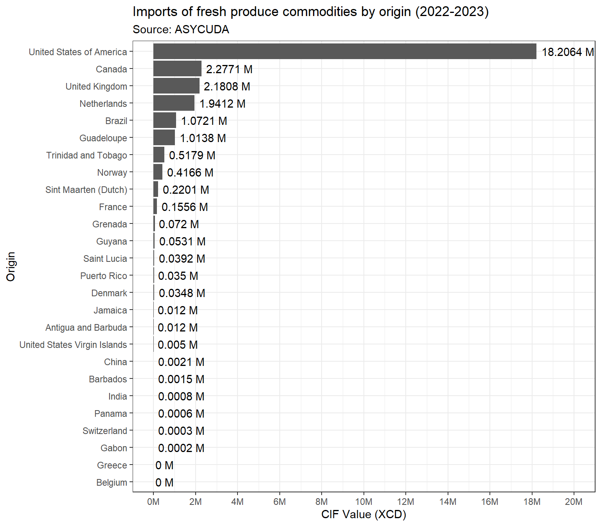
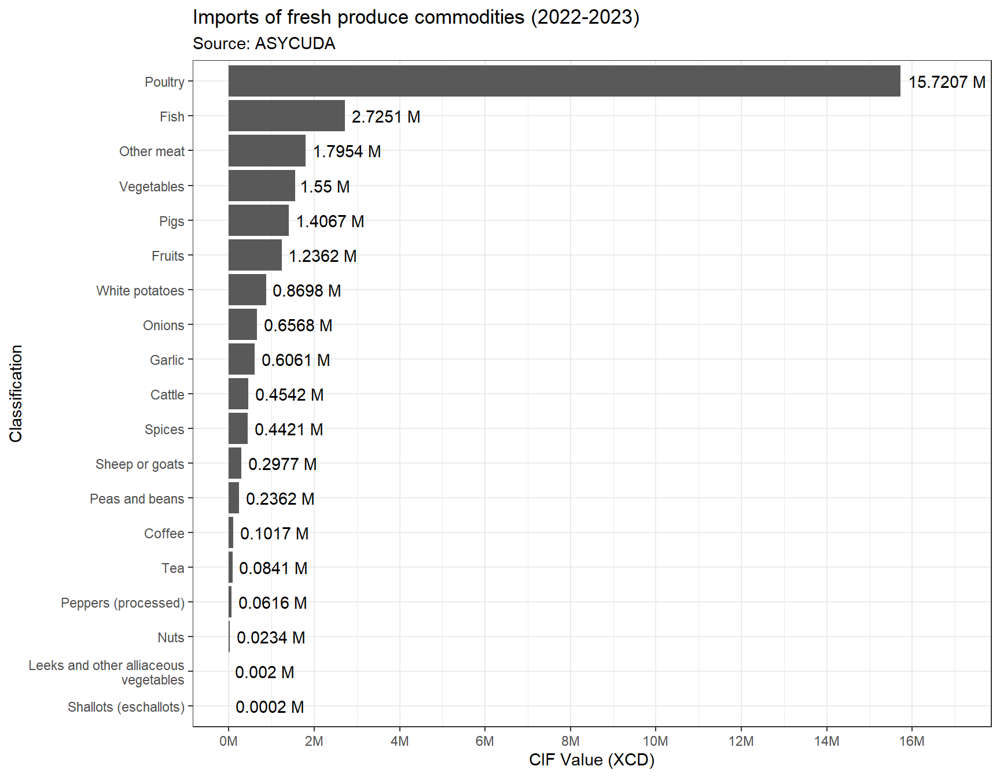

library(tidyverse) # For plots, reshaping data and summaries. Takes the place of ggplot2, dplyr, tidyr, stringr, lubridate, readr, and others
library(readxl) # For MS Excel files
library(here) # Used for finding files within your project. See more information at https://github.com/jennybc/here_here/blob/master/README.md and https://www.tidyverse.org/articles/2017/12/workflow-vs-script
library(janitor) # For some data exploration, cleaning and other useful functionality
library(scales) # For number formats
library(knitr) # For neat tablesASYCUDA Data: Fresh Produce Imports 2022-2023
1 Introduction
2 Methodology
2.1 Working environment
Data work was performed in the R environment, using the RStudio IDE. Libraries or packages used are shown below:
Given that the data contains very large numbers (in the millions), we will force R to not use scientific notation using the code below:
## numbers >= 10^5 will be denoted in scientific notation,
## and rounded to 2 digits
options(scipen = 5, digits = 2)2.2 Data used
The data used for this exercise was obtained from ASYCUDA databases. It shows commodities imported to Dominica over the period July 2022 to June 2023. The data can be found on my Dropbox here: https://www.dropbox.com/scl/fi/co4z5zy7yfeh893g0ninp/import-fresh.xls?rlkey=pmqaqmfrwrep1fzbx597wsd3n&dl=0.
Here we load the data, clean the variable names, create a new variable made up of the first four characters of the “hs_code” variable, and lastly set certain variables as factors and reorder the variables:
# Load asycuda data ----
asycuda <- read_xls(here("00_raw_data", "ASYCUDA", "import fresh.xls")) %>%
clean_names() %>%
# Rename "tariff_code" to "hs_code" etc.
rename(hs_code = tariff_code,
origin = orgin) %>%
# Create higher level code for commodities (first 4 digits)
mutate(hs_code_categories = str_sub(hs_code, 1, 4)) %>%
# Make columns as factor
mutate(across(c(hs_code_categories, hs_code, description, origin), as.factor)) %>%
select(hs_code_categories, everything())The variables are described this way:
| Variable name | Description |
|---|---|
| hs_code_categories | Categories code for HS Codes |
| hs_code | Harmonised System (HS) Codes for commodities |
| description | Description of the comodity |
| origin | Country of origin of the commodity imported |
| weight_kg | Weight imported in kilograms (kg) |
| cif_value_ecd | Cost Insurance and Freight (CIF) value in Eastern Caribbean Dollars (XCD) |
A preview of the data is shown below:
kable(head(asycuda))| hs_code_categories | hs_code | description | origin | weight_kg | cif_value_ecd |
|---|---|---|---|---|---|
| 0201 | 0201100000 | Carcasses and halfcarcasses | Guadeloupe | 6.2 | 165 |
| 0201 | 0201309000 | Other | United States of America | 4360.0 | 50514 |
| 0202 | 0202201000 | Brisket | United States of America | 2059.1 | 20763 |
| 0202 | 0202209000 | Other | Guadeloupe | 9.0 | 30 |
| 0202 | 0202209000 | Other | Sint Maarten (Dutch) | 215.0 | 1240 |
| 0202 | 0202209000 | Other | United States of America | 3274.5 | 35768 |
In exploring the “asycuda” data, it was observed that the description had over 100 unique values and many with similar names. Additionally, the variable has category and sub-category values within. This causes some of the issue with ambiguity. It was decided to import an HS Code dictionary to address the issue and get higher level categories for use instead of the commodity description.
After a quick search on the internet an MS Excel spreadsheet was found and downloaded. However, the structure was not very useful as multiple lines of data were included within a single row. Cleaning the entire spreadsheet was time consuming, so only the rows containing the codes necessary were cleaned and saved as a CSV file (find this here: https://www.dropbox.com/scl/fi/mjwl34493bla9t4rhgsjj/hs_codes_list.csv?rlkey=826udzwb2nbsk15cpw27sns1t&dl=0), using a semi-colon delimiter between variables. The data is loaded here:
# Load HS codes ----
hs_codes <- read_delim(here("00_raw_data", "ASYCUDA", "hs_codes_list.csv"),
delim = ";", escape_double = FALSE, trim_ws = TRUE)Here is a preview of the “hs_codes” data set:
# slice_sample() gives us a random number of rows from the data set. The number of rows randomly shown is controlled by the "n" value.
kable(slice_sample(hs_codes, n = 5))| hs_category_code | description |
|---|---|
| 0502 | Pigs, hogs or boars bristles and hair and waste thereof |
| 0603 | Flowers cut flowers and flower buds of a kind suitable for bouquets or for ornamental purposes, fresh, drie |
| 0711 | Vegetables provisionally preserved (eg by sulphur dioxide gas, in brine, in sulphur water or in other preserv |
| 0805 | Citrus fruit fresh or dried |
| 0208 | Meat and edible meat offal, n.e.s. in chapter 2 fresh, chilled or frozen |
Th “asycuda” data is revised here:
# Revised asycuda ----
asycuda_rev <- asycuda %>%
# Add in HS code categories
left_join(hs_codes %>%
# Rename "description" variable in "hs_codes" to "category"
rename(category = description),
# Join the two data sets using common variables
by = c("hs_code_categories" = "hs_category_code")) %>%
# Reclassify commodities
mutate(classification = case_when(
hs_code_categories %in% c("0201", "0202") ~ "Cattle",
hs_code_categories %in% c("0203") ~ "Pigs",
hs_code_categories %in% c("0204") ~ "Sheep or goats",
hs_code_categories %in% c("0207") ~ "Poultry",
hs_code_categories %in% c("0210", "0208", "0206", "0209") ~ "Other meat",
hs_code_categories %in% c("0701") ~ "White potatoes",
hs_code_categories %in% c("0703") ~ description,
grepl("^03", hs_code_categories) ~ "Fish",
grepl("beans|peas", description, ignore.case = TRUE) & !grepl("blend", description) ~ "Peas and beans",
grepl("^07", hs_code_categories) ~ "Vegetables",
hs_code_categories %in% c("0801", "0802") ~ "Nuts",
hs_code_categories %in% c("0804", "0806", "0807", "0808",
"0809", "0810", "0811", "0812", "0813", "0814") ~ "Fruits",
hs_code_categories == "0901" ~ "Coffee",
hs_code_categories == "0902" ~ "Tea",
hs_code_categories == "0904" ~ "Peppers (processed)",
hs_code_categories %in% c("0905", "0906", "0907", "0908",
"0909", "0910") ~ "Spices"
)) %>%
# Reorder variables
select(hs_code_categories, hs_code, classification, category, everything())A preview of the “asycuda_rev” is shown below:
kable(slice_sample(asycuda_rev, n = 5))| hs_code_categories | hs_code | classification | category | description | origin | weight_kg | cif_value_ecd |
|---|---|---|---|---|---|---|---|
| 0905 | 0905100000 | Spices | Vanilla | Neither crushed nor ground | United States of America | 25 | 103 |
| 0306 | 0306110000 | Fish | Crustaceans, in shell or not, live, fresh, chilled, frozen, dried, salted or in brine crustaceans, in shell, cooked | Rock lobster and other sea crawfish (Palinurus spp., Panulirus spp., Jasus spp.) | Guadeloupe | 25 | 609 |
| 0207 | 0207271000 | Poultry | Meat and edible offal of poultry of the poultry of heading no. 0105, (ie fowls of the species gallus domestic | Backs, necks and wings | United States of America | 18797 | 125999 |
| 0303 | 0303892000 | Fish | Fish frozen (excluding fish fillets and other fish meat of heading no. 0304) | Snapper, croaker, grouper, dolphinfish (mahimahi) and bangamary | United States of America | 1317 | 82 |
| 0210 | 0210203000 | Other meat | Meat and edible meat offal salted, in brine, dried or smoked edible flours and meals of meat or meat offal | Smoked | Guadeloupe | 21 | 360 |
3 Results
Now that we have fixed our data a bit to make it useful for analysis and reporting, we will proceed with some of that. We will use the weight in kg (“weight_kg”) and CIF value (“item_cif”) in this report to show the quantities and values imported for the period.
3.1 Imports of fresh produce by origin
# Prep data ----
d01 <- asycuda_rev %>%
group_by(origin) %>%
summarise(sum_cif = sum(cif_value_ecd, na.rm = TRUE),
sum_weight = sum(weight_kg, na.rm = TRUE)) %>%
mutate(cif_percent = sum_cif/sum(sum_cif),
weight_percent = sum_weight/sum(sum_weight)) %>%
select(origin, sum_cif, cif_percent, sum_weight, weight_percent)A total of 26 origin locations were identified around the world. The table below shows the CIF value (XCD) and share (%) of fresh produce commodities by origin.
kable(d01 %>%
mutate(cif_percent = cif_percent*100,
weight_percent = weight_percent*100) %>%
adorn_totals(where = "row"),
col.names = c("Origin", "CIF value (XCD)", "CIF value share (%)", "Weight (kg)", "Weight share (%)"),
format.args = list(big.mark = ','))?(caption)
| Origin | CIF value (XCD) | CIF value share (%) | Weight (kg) | Weight share (%) |
|---|---|---|---|---|
| Antigua and Barbuda | 11,995 | 0.04 | 80.0 | 0.00 |
| Barbados | 1,500 | 0.01 | 32.5 | 0.00 |
| Belgium | 20 | 0.00 | 5.7 | 0.00 |
| Brazil | 1,072,081 | 3.79 | 208,755.4 | 4.70 |
| Canada | 2,277,074 | 8.05 | 296,421.2 | 6.67 |
| China | 2,085 | 0.01 | 971.4 | 0.02 |
| Denmark | 34,776 | 0.12 | 1,995.0 | 0.04 |
| France | 155,616 | 0.55 | 7,344.8 | 0.17 |
| Gabon | 186 | 0.00 | 1.0 | 0.00 |
| Greece | 31 | 0.00 | 5.7 | 0.00 |
| Grenada | 72,016 | 0.25 | 1,711.3 | 0.04 |
| Guadeloupe | 1,013,751 | 3.59 | 93,437.7 | 2.10 |
| Guyana | 53,112 | 0.19 | 4,002.7 | 0.09 |
| India | 787 | 0.00 | 5.3 | 0.00 |
| Jamaica | 11,998 | 0.04 | 1,148.2 | 0.03 |
| Netherlands | 1,941,202 | 6.87 | 480,109.0 | 10.81 |
| Norway | 416,569 | 1.47 | 26,544.0 | 0.60 |
| Panama | 609 | 0.00 | 21.4 | 0.00 |
| Puerto Rico | 35,021 | 0.12 | 3,871.1 | 0.09 |
| Saint Lucia | 39,194 | 0.14 | 1,138.0 | 0.03 |
| Sint Maarten (Dutch) | 220,071 | 0.78 | 3,271.4 | 0.07 |
| Switzerland | 296 | 0.00 | 9.1 | 0.00 |
| Trinidad and Tobago | 517,916 | 1.83 | 66,411.4 | 1.50 |
| United Kingdom | 2,180,760 | 7.71 | 276,539.1 | 6.23 |
| United States of America | 18,206,445 | 64.40 | 2,968,056.5 | 66.82 |
| United States Virgin Islands | 4,955 | 0.02 | 175.1 | 0.00 |
| Total | 28,270,065 | 100.00 | 4,442,063.9 | 100.00 |
Perhaps this is better illustrated in the plot below:
ggplot(d01 %>%
# Reorder the rows by CIF value, from largest to smallest
arrange(sum_cif),
aes(x = reorder(origin, +sum_cif), # Reorder x-axis labels by CIF value
y = sum_cif)) +
# Plot bars
geom_bar(stat = "identity") +
# Include text labels outside of bars and round to millions and add "M" at the end
geom_text(aes(label = paste(round(sum_cif/ 1e6, 4), "M")),
hjust = -0.1) +
# Flip the plot 90 degrees for easier reading
coord_flip() +
# Format plot y-axis scale
scale_y_continuous(labels = label_number(suffix = "M", scale = 1e-6),
limits = c(0, 20000000),
breaks = seq(0, 20000000, 2000000)) +
# Set theme (I like the black and white)
theme_bw() +
# Add labels and titles
labs(x = "Origin",
y = "CIF Value (XCD)",
title = "Imports of fresh produce commodities by origin (2022-2023)",
subtitle = "Source: ASYCUDA")
3.1.1 The USA
By a wide margin, the United States of America (USA) is the chief origin of fresh produce imports. The commodities imported from the US are shown below.
d01 <- asycuda_rev %>%
filter(origin == "United States of America") %>%
group_by(classification) %>%
summarise(sum_cif = sum(cif_value_ecd, na.rm = TRUE),
sum_weight = sum(weight_kg, na.rm = TRUE)) %>%
mutate(cif_percent = sum_cif/sum(sum_cif),
weight_percent = sum_weight/sum(sum_weight)) %>%
select(classification, sum_cif, cif_percent, sum_weight, weight_percent)We see that 75.81% of the total value of commodities imported form the USA was Poultry, with a value of $13.8 million XCD.
kable(d01 %>%
mutate(cif_percent = cif_percent*100,
weight_percent = weight_percent*100) %>%
adorn_totals(where = "row"),
col.names = c("Commodity classification", "CIF value (XCD)", "CIF value share (%)", "Weight (kg)", "Weight share (%)"),
format.args = list(big.mark = ','))?(caption)
| Commodity classification | CIF value (XCD) | CIF value share (%) | Weight (kg) | Weight share (%) |
|---|---|---|---|---|
| Cattle | 442,456 | 2.43 | 42,486 | 1.43 |
| Coffee | 39,267 | 0.22 | 1,791 | 0.06 |
| Fish | 655,983 | 3.60 | 83,722 | 2.82 |
| Fruits | 717,189 | 3.94 | 62,355 | 2.10 |
| Garlic | 28,588 | 0.16 | 2,662 | 0.09 |
| Leeks and other alliaceous vegetables | 1,969 | 0.01 | 153 | 0.01 |
| Nuts | 18,793 | 0.10 | 1,163 | 0.04 |
| Onions | 81,158 | 0.45 | 7,838 | 0.26 |
| Other meat | 653,460 | 3.59 | 108,701 | 3.66 |
| Peas and beans | 41,496 | 0.23 | 4,374 | 0.15 |
| Peppers (processed) | 45,128 | 0.25 | 3,809 | 0.13 |
| Pigs | 604,654 | 3.32 | 75,876 | 2.56 |
| Poultry | 13,802,392 | 75.81 | 2,469,080 | 83.19 |
| Shallots (eschallots) | 155 | 0.00 | 14 | 0.00 |
| Sheep or goats | 59,429 | 0.33 | 6,119 | 0.21 |
| Spices | 146,269 | 0.80 | 5,593 | 0.19 |
| Tea | 69,971 | 0.38 | 5,127 | 0.17 |
| Vegetables | 615,362 | 3.38 | 70,679 | 2.38 |
| White potatoes | 182,726 | 1.00 | 16,516 | 0.56 |
| Total | 18,206,445 | 100.00 | 2,968,056 | 100.00 |
3.2 Imports of fresh produce by commodity classifications
# Prep data ----
d01 <- asycuda_rev %>%
group_by(classification) %>%
summarise(sum_cif = sum(cif_value_ecd, na.rm = TRUE),
sum_weight = sum(weight_kg, na.rm = TRUE)) %>%
mutate(cif_percent = sum_cif/sum(sum_cif),
weight_percent = sum_weight/sum(sum_weight)) %>%
select(classification, sum_cif, cif_percent, sum_weight, weight_percent)Poultry was the most imported commodity based on value ($15.72 million XCD) and weight (2.8 million kg) for all countries.
ggplot(d01 %>%
arrange(sum_cif),
aes(x = reorder(str_wrap(classification, 30), +sum_cif), y = sum_cif)) +
geom_bar(stat = "identity") +
geom_text(aes(label = paste(round(sum_cif/ 1e6, 4), "M")),
hjust = -0.1) +
coord_flip() +
scale_y_continuous(labels = label_number(suffix = "M", scale = 1e-6),
limits = c(0, 17000000),
breaks = seq(0, 18000000, 2000000)) +
theme_bw() +
labs(x = "Classification",
y = "CIF Value (XCD)",
title = "Imports of fresh produce commodities (2022-2023)",
subtitle = "Source: ASYCUDA")
3.2.1 Poultry
Looking at Poultry a bit more deeply, we can examine what sub-classifications of poultry are imported. The poultry commodity with the largest presence in the data is “Other”. This indicates that the actual commodity was not specified in our data.
d01 <- asycuda_rev %>%
filter(classification == "Poultry") %>%
group_by(description) %>%
summarise(sum_cif = sum(cif_value_ecd, na.rm = TRUE),
sum_weight = sum(weight_kg, na.rm = TRUE)) %>%
mutate(cif_percent = sum_cif/sum(sum_cif),
weight_percent = sum_weight/sum(sum_weight)) %>%
select(description, sum_cif, cif_percent, sum_weight, weight_percent)kable(d01 %>%
mutate(cif_percent = cif_percent*100,
weight_percent = weight_percent*100) %>%
adorn_totals(where = "row"),
col.names = c("Commodity", "CIF value (XCD)", "CIF value share (%)", "Weight (kg)", "Weight share (%)"),
format.args = list(big.mark = ','))?(caption)
| Commodity | CIF value (XCD) | CIF value share (%) | Weight (kg) | Weight share (%) |
|---|---|---|---|---|
| Backs and necks | 804,145 | 5.12 | 172,214 | 6.17 |
| Backs, necks and wings | 267,271 | 1.70 | 41,446 | 1.48 |
| Cuts and offal, fresh or chilled | 1,677 | 0.01 | 68 | 0.00 |
| Fatty livers, fresh or chilled | 663 | 0.00 | 15 | 0.00 |
| Livers | 1,665 | 0.01 | 279 | 0.01 |
| Not cut in pieces, fresh or chilled | 136,198 | 0.87 | 7,689 | 0.28 |
| Not cut in pieces, frozen | 81,356 | 0.52 | 30,570 | 1.09 |
| Other | 6,520,420 | 41.48 | 1,270,691 | 45.51 |
| Other, frozen | 2,290 | 0.01 | 1,568 | 0.06 |
| Wings | 7,905,061 | 50.28 | 1,267,368 | 45.39 |
| Total | 15,720,745 | 100.00 | 2,791,907 | 100.00 |
3.2.2 Fish
Fish commodities are shown similarly below:
d01 <- asycuda_rev %>%
filter(classification == "Fish") %>%
# Some cleaning
mutate(description = case_when(
grepl("^Cod", description, ignore.case = FALSE) ~ "Cod, mackerel and alewives",
grepl("Pacific salmon", description, ignore.case = FALSE) ~ "Pacific salmon",
TRUE ~ as.character(description)
)) %>%
group_by(description) %>%
summarise(sum_cif = sum(cif_value_ecd, na.rm = TRUE),
sum_weight = sum(weight_kg, na.rm = TRUE)) %>%
mutate(cif_percent = sum_cif/sum(sum_cif),
weight_percent = sum_weight/sum(sum_weight)) %>%
select(description, sum_cif, cif_percent, sum_weight, weight_percent)
kable(d01 %>%
mutate(cif_percent = cif_percent*100,
weight_percent = weight_percent*100) %>%
adorn_totals(where = "row"),
col.names = c("Commodity", "CIF value (XCD)", "CIF value share (%)", "Weight (kg)", "Weight share (%)"),
format.args = list(big.mark = ','))?(caption)
| Commodity | CIF value (XCD) | CIF value share (%) | Weight (kg) | Weight share (%) |
|---|---|---|---|---|
| Alewives, saithe, pollock, haddock and hake | 250 | 0.01 | 75 | 0.04 |
| Cod, mackerel and alewives | 241,226 | 8.85 | 21,565 | 10.42 |
| Coldwater shrimps and prawns (Pandalus spp., Crangon crangon) | 464 | 0.02 | 20 | 0.01 |
| For breeding | 6,353 | 0.23 | 80 | 0.04 |
| Frozen | 17,924 | 0.66 | 2,167 | 1.05 |
| Herrings (Clupea harengus, Clupea pallasii) | 340,474 | 12.49 | 29,294 | 14.16 |
| Mackerel | 49,051 | 1.80 | 2,679 | 1.29 |
| Other | 1,718,487 | 63.06 | 100,199 | 48.43 |
| Other shrimps and prawns | 295,856 | 10.86 | 36,685 | 17.73 |
| Other stromboid conchs (Strombus spp.) | 3,206 | 0.12 | 4,256 | 2.06 |
| Pacific salmon | 45,029 | 1.65 | 2,564 | 1.24 |
| Rock lobster and other sea crawfish (Palinurus spp., Panulirus spp., Jasus spp.) | 1,940 | 0.07 | 4,281 | 2.07 |
| Shrimps and prawns | 4,277 | 0.16 | 1,668 | 0.81 |
| Snapper, croaker, grouper, dolphinfish (mahimahi) and bangamary | 82 | 0.00 | 1,317 | 0.64 |
| Tilapias (Oreochromis spp.) | 437 | 0.02 | 28 | 0.01 |
| Total | 2,725,057 | 100.00 | 206,876 | 100.00 |